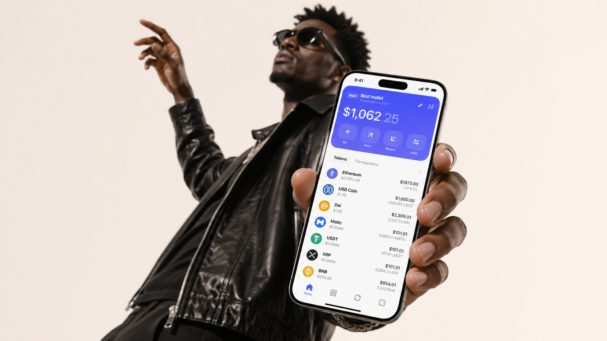
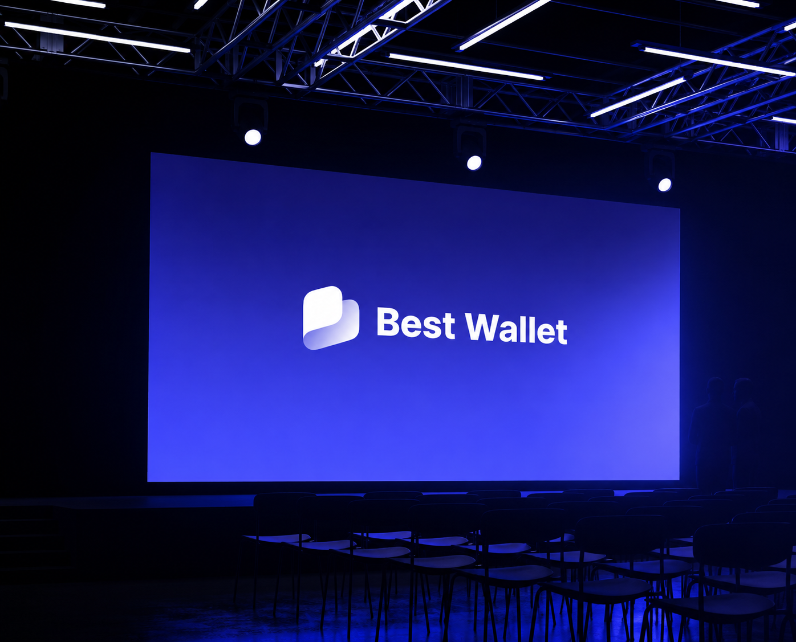
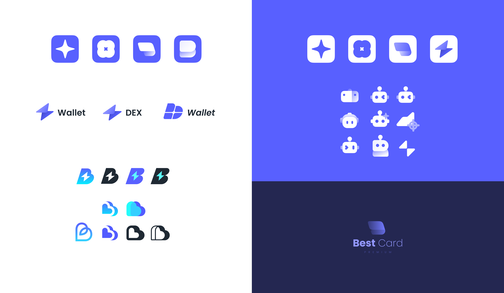
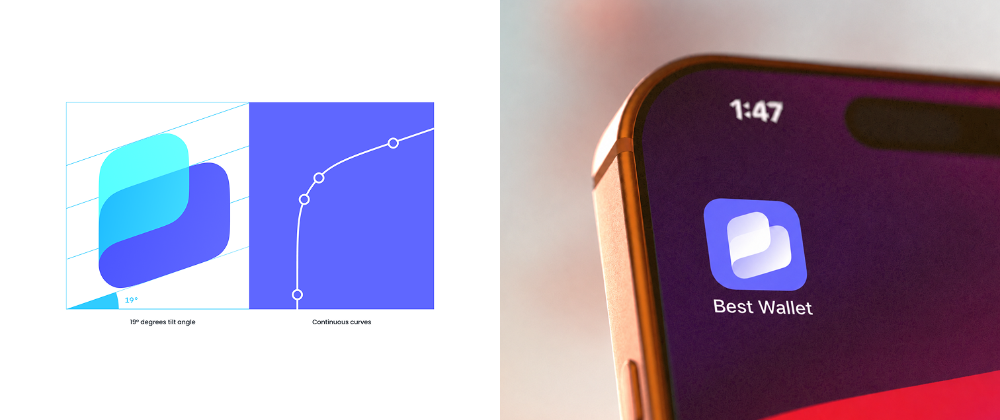
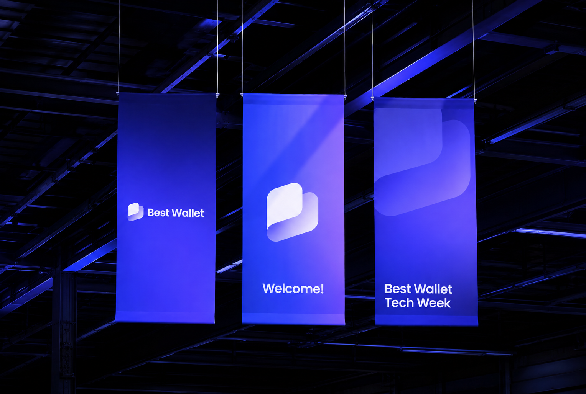
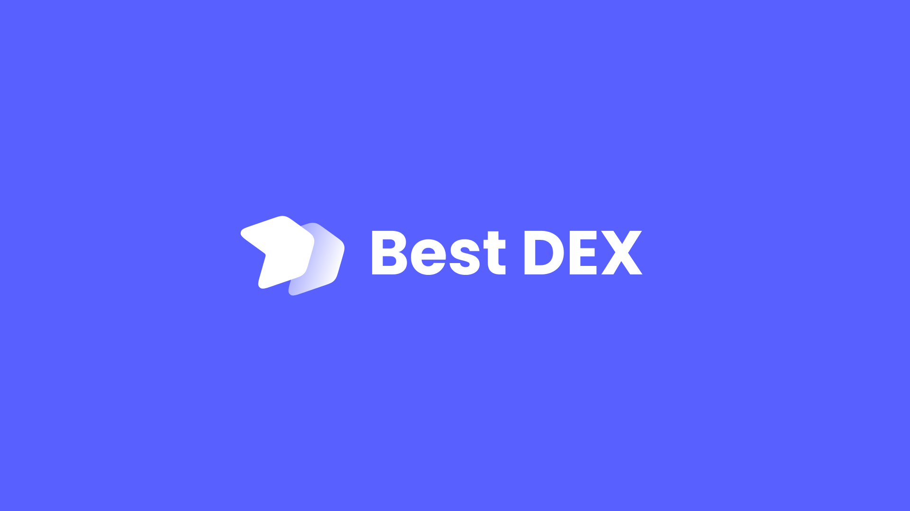

复杂，但不能令人退缩
在完整保留资产控制、链上信息与专业能力的同时，降低理解门槛， 让新用户也能顺利完成关键流程，并支持产品快速增长与转化。
Best Wallet

加密钱包往往迫使用户在安全与易用之间做选择：对专家足够强大， 对新手却过于陌生。Best Wallet 希望改变这种默认取舍。
作为 Founder designer，我从品牌识别出发，连接移动端钱包与 Web3 支付流程， 让每个触点都传递同一种确定感。

大多数 Web3 产品用更多术语证明专业。Best Wallet 选择相反的方向： 不隐藏风险，也不让复杂性成为进入的门槛。品牌的核心任务，是让控制权变得清楚、可理解、可行动。
当品牌进入产品，挑战不只是让界面更简单，而是在不隐藏区块链复杂性的前提下， 让用户知道自己拥有什么、正在做什么，以及下一步会发生什么。
在完整保留资产控制、链上信息与专业能力的同时，降低理解门槛， 让新用户也能顺利完成关键流程，并支持产品快速增长与转化。
建立一套可以持续扩展的设计系统，使钱包、DEX 与支付流程 在快速演进中仍然保持同样的交互逻辑和视觉识别。


Self-custody 对新用户常常显得不可逆、难以承担。界面需要降低压力， 同时保留有经验用户期待的所有权、透明度与控制感。
钱包创建、支付、swap 与确认不应像互不相关的步骤。 用户需要始终明白自己在哪里、什么正在改变，以及即将确认什么动作。
动效与视觉细节只在能够提供确认、识别或理解时出现。 品牌符号、钱包卡片、onboarding 与成功状态共同让技术产品变得更熟悉。
视觉系统把“控制”从沉重的金融隐喻中释放出来。连续曲线、19° 向前倾角与蓝紫—青色渐变， 让品牌既有技术精度，也保留轻盈和行动感。
标志从钱包、路径与连续连接的意象出发。先广泛测试字标、钱包轮廓、字母 B 与辅助角色，再把探索收敛为两段连续曲面，以 19° 前倾角和一致曲率建立稳定、向前的视觉重心，最终形成可以跨产品延展的识别系统。



同一套形体逻辑可以扩展到 Best DEX 与 Best Card。产品不同，但图标比例、渐变方向与字标关系保持一致。
